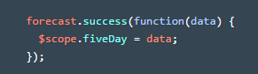
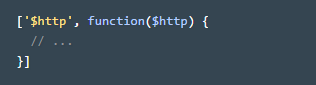

So far we've made AngularJS apps by adding data to a controller, and then displaying it in a view.
But what happens when the data contains hundreds of items, or if it's constantly changing like weather or financial data? Hardcoding data into a controller won't work anymore.
A better solution is to read the live data from a server. We can do this by creating a service.
el jason que tengo en el archivo jason.js es la similitud de traer datos en la base de datos.
1. Create a service named forecast that fetches the weather data from the server. In the new file js/services/forecast.js Type in this code exactly as you see here:
2.se crea el servicio con el codigo de js/services/forecast.js
3.se pone el script direccionandolo al index.html
4.In the controller, modify MainController by passing in the forecast service, like this:

5.Inside MainController, use the forecast service to save the weather data into $scope.fiveDay, like this:
explicacion:
Como no funciona porque no se como traer los datos, solo tengo el jason pero despues miro como lo aplico de todos modos la explicacion es esta:
1. First in js/services/forecast.js, we made a new service. We used app.factory to create a new service named forecast
2. The forecast service needs to use AngularJS's built-in $http to fetch JSON from the server. Therefore, we add $http to the forecast service as a dependency, like this:

Now $http is available to use inside forecast.
3. Then, inside forecast, we use $http to construct an HTTP GET request for the weather data. If the request succeeds, the weather data is returned; otherwise the error info is returned.
4. Next in the controller, we used the forecast service to fetch data from the server. First we added forecast into MainController as a dependency so that it's available to use. Then within the controller we used forecast to asynchronously fetch the weather data from the server and store it into $scope.fiveDay
5. As before, any properties attached to $scope become available to use in the view. This means in index.html, we can display the city_name using an expression as done before.
6.